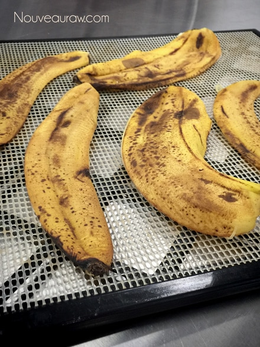
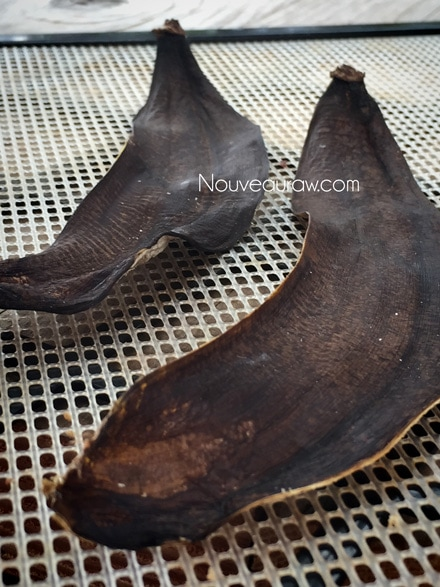

Dehydrated Banana Peels
 Today’s post is all about the garden, but instead of talking about what we take out of it, I am going to talk about what we put INTO it. Fertilizer! This is a simple fertilizer that can be made every time you peel a banana.
Today’s post is all about the garden, but instead of talking about what we take out of it, I am going to talk about what we put INTO it. Fertilizer! This is a simple fertilizer that can be made every time you peel a banana.
Here are just a few of the important minerals and nutrients that are contained in banana peels: phosphorus, calcium, manganese, sodium, magnesium, sulfur and the one that I want to quickly touch more in-depth about today is…
Potassium (Contains 42% when dried)
We all know that our bodies require potassium… for starters, it plays a role in every heartbeat. A hundred thousand times a day, it helps trigger your heart to squeeze blood through your body. It also helps your muscles to move, your nerves to work, and your kidneys to filter blood. But have you ever stopped to think that the plants in your yard need it too?
Recycling the peels back into your garden saves money and returns these nutrients to the soil where they can benefit the plants. Suppose you don’t have a flower garden and don’t have a need for fertilizer… that’s ok…. still make it and give it away as a gift. Anyone with a “green thumb” would just love it!
Potassium is an essential plant nutrient which is needed for proper growth and reproduction of plants. While you can’t get away with fertilizing plants with only bananas, it does provide a boost of potassium essential for healthy, and for the beautiful new formation of flower buds.
You can just bury a banana peel under one inch of soil at the base of a plant. But it’s not always convenient; too busy, it’s winter, don’t want to attract fruit flies and bugs, etc. That is why I like to dehydrate the peels and grind to a powder in my Vitamix. I then place in it an airtight container so it is ready next time I need to fertilize the flowers or when I go to plant new ones.
Caution – know your plants and what type of fertilizers they need before you douse the flower gardens in banana powder. Google or talk to your local nursery expert to help you. When it comes to fertilizing, there is such a thing as “too much of a good thing”.
Preparation:
Dehydrator method:
- Place the banana peels in a single layer on the mesh sheets that come with the dehydrator.
- Dehydrate at 115 degrees (F) for 4-8 hours or until dry.
- Allow them cool, the should literally snap when bent.
- Break into pieces and place in a blender. Blend to a fine powder. When you remove the blender lid a fine dust will bellow out so be careful that you don’t take a deep inhale at that exact moment.
- Store in an airtight jar until ready to use.
Oven method:
- Preheat the oven to its lowest temperature.
- Place the banana peels on a cookie sheet that has been lined with foil. Make sure the outer skin is facing down they don’t stick to the sheet.
- Bake until they turn black, not burnt. Once cooled they should be very stiff and snap when bent.
- Grind to a powder.


© AmieSue.com